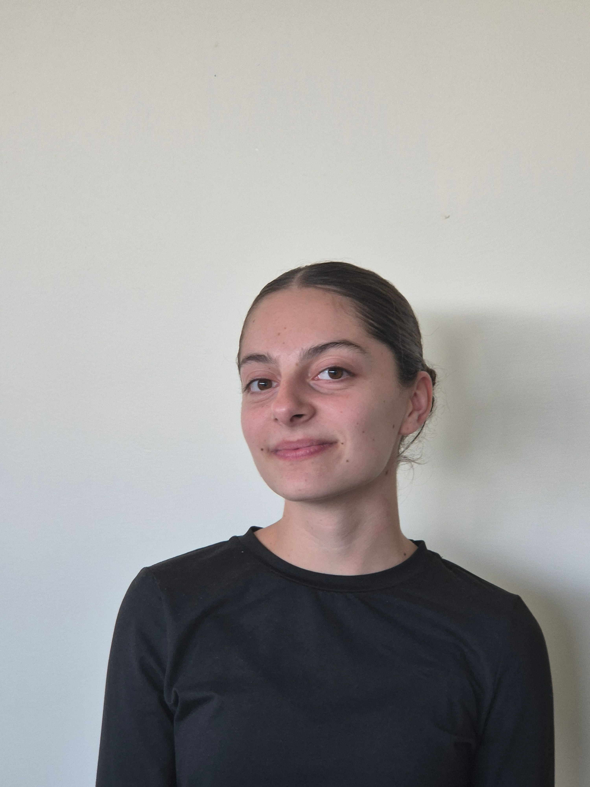
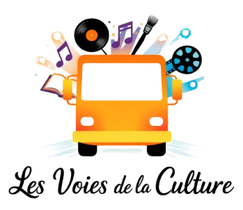
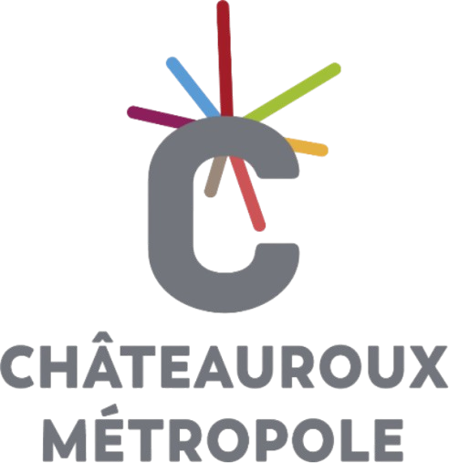
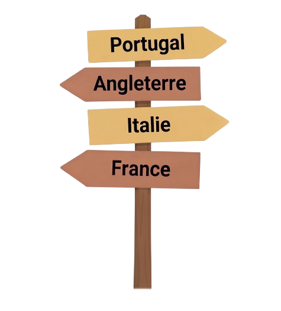

Etudiante en troisième année de
BUT GEA : Parcours Gestion Comptable, Fiscale et Financière
Bienvenue dans mon portfolio. Vous y découvrirez mon parcours, mes expériences universitaires et professionnelles ainsi que les compétences que j'ai développées au cours de ma formation.
Spécialités Mathématiques et SES
Gestion des Entreprises et des Administrations
Gestion Comptable, Fiscale et Financière
Projet "Les voies de la culture"
Châteauroux Métropole (2026)
Validation des acquis
Projet entrepreneurial collectif en lien avec Pépite — SAÉ BUT GEA 2

Contexte : Ayant grandi en zone rurale, j'ai constaté les inégalités d'accès à la culture. Avec mon groupe, nous avons imaginé un camion culturel mobile proposant des expositions et des projections immersives à une quinzaine de personnes par session.
L'objectif était de rapprocher la culture des habitants des territoires ruraux et de leur proposer une offre culturelle accessible.
Ce travail collectif a abouti à la construction d'un projet entrepreneurial structuré, intégrant une étude de marché, une stratégie commerciale, un cadre réglementaire et un modèle financier prévisionnel. Mes recherches ont notamment contribué à préciser le positionnement du projet et à mieux comprendre son environnement.
Je suis parvenue à m'impliquer dans les différentes étapes de construction du projet, de l'étude de marché à l'élaboration du modèle financier prévisionnel sur trois ans. J'ai notamment contribué aux recherches documentaires, à l'analyse de la concurrence, à la réflexion autour de l'offre et à l'étude de ses aspects commerciaux, juridiques et financiers. Cette diversité de missions m'a permis d'avoir une vision plus globale de la création d'un projet entrepreneurial et de mobiliser différentes connaissances acquises au cours de ma formation.
J'ai parfois rencontré des difficultés à gérer les différences de rythme au sein du groupe et à défendre mes idées. Cette expérience m'a appris à mieux communiquer et à prendre davantage ma place dans le travail collectif.
Service Production Comptable Intégrée et Grands Projets — Avril à Juin 2026

Participer au suivi et au traitement des dépenses de la collectivité, en appui aux agents du service finances.
Sedit: Gestion comptable et budgétaire des dépenses
Suivi du circuit de validation et de la signature électronique
Voyager, c'est aussi planifier : j'aime concevoir des itinéraires en conciliant temps, distances et budget, afin de profiter pleinement de chaque séjour.
Organiser les visites et les déplacements pour créer un programme cohérent et adapté à la durée du séjour.
Vérifier les horaires, les tarifs et les conditions d'accès pour anticiper les contraintes.
Estimer les durées de visite et de trajet pour organiser les journées sans surcharger le programme.
Comparer les coûts des transports et des activités pour respecter le budget prévu.
Au-delà de la préparation, les voyages nourrissent ma curiosité et mon envie de découvrir de nouveaux lieux et modes de vie. Ils me permettent de sortir de mes habitudes, de m'ouvrir à d'autres cultures et d'élargir ma vision du monde.
